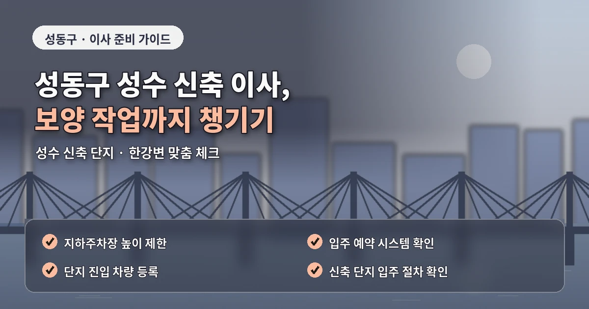
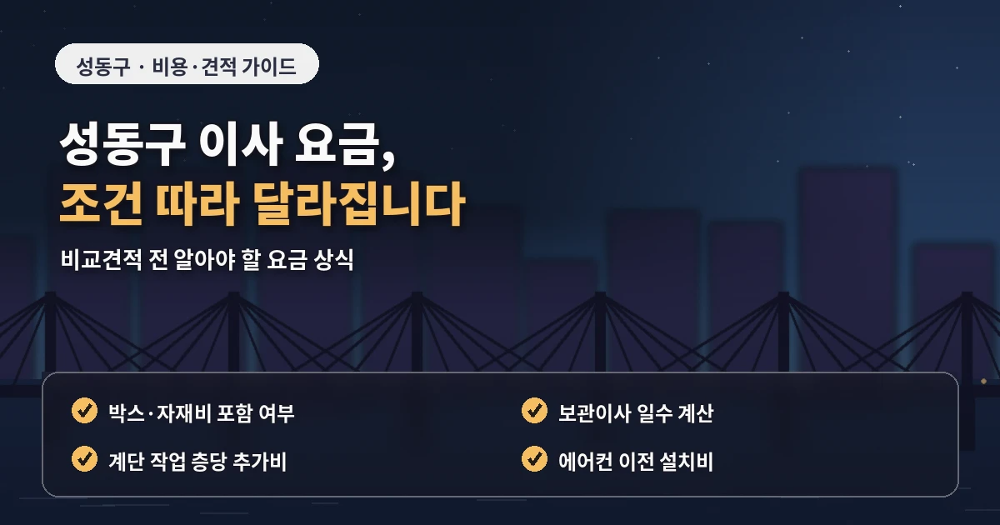
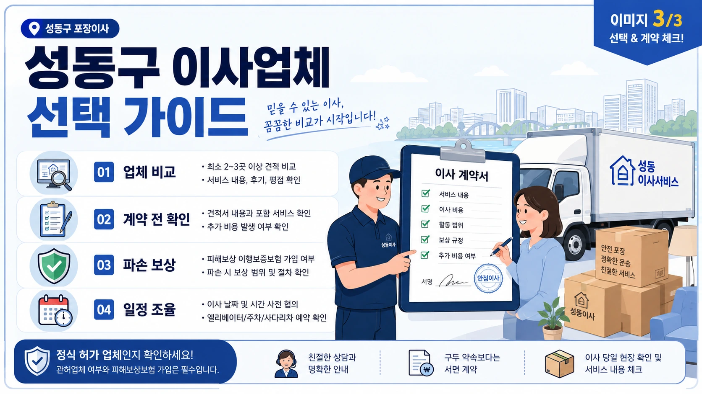

서울 성동구포장이사추천 신축단지 견적 정리
성동구 포장이사는
신축 아파트와 오피스텔,
한강변 단지와 상가주택이 함께 있어
현장 조건을 꼼꼼히 확인해야 합니다.
성수동은 오피스텔과 상가주택,
왕십리동은 역세권 주거지,
금호동과 옥수동은 한강변 아파트와
언덕형 주거지가 함께 있습니다.

이런 지역 특성 때문에
성동구 포장이사 비용은
평수와 짐의 양만으로 정하기 어렵습니다.
견적을 좌우하는 현장 조건
건물 앞 차량 대기 가능 여부,
엘리베이터 사용 시간,
공용공간 보양 규정,
사다리차 설치 가능 위치,
대형가전 이동 조건이 견적에 영향을 줍니다.
신축 아파트나 오피스텔은
관리 규정이 세부적으로 정해진 경우가 많습니다.
이사 가능 시간,
화물 엘리베이터 예약,
바닥과 벽면 보양,
차량 진입 위치를 미리 확인해야
당일 작업이 지연되지 않습니다.
성수동처럼 상권과 주거가 가까운 곳은
차량 정차가 어려울 수 있습니다.

작업 차량이 건물 바로 앞에 서지 못하면
짐을 옮기는 거리가 길어지고
장거리 운반비가 발생할 수 있습니다.
업체 선택 전 확인할 기준
금호동이나 옥수동 일부 지역은
언덕과 도로 폭도 확인해야 합니다.
고층 아파트라도 단지 진입로가 복잡하면
차량 대기 위치와 엘리베이터 동선을
사전에 맞춰두는 것이 좋습니다.
성동구 포장이사 업체추천을 볼 때는
신축 단지 작업 경험과 보양 기준을 확인해야 합니다.
가구를 옮기는 과정에서
벽면, 복도, 엘리베이터 내부에 흠집이 생기지 않도록
업체가 어떤 보호 자재를 쓰는지 물어보는 것이 좋습니다.
견적서에는 차량 대수,
작업 인원,
포장재 제공,
가구 보양,
바닥 보호,
분해 조립,
사다리차 사용 여부가 들어가야 합니다.
포장이사 비교견적은
같은 기준으로 받아야 의미가 있습니다.

추가비용을 줄이는 준비 방법
출발지와 도착지의 층수,
엘리베이터 예약 여부,
주차 가능 위치,
짐의 양,
큰 가전과 가구,
버릴 물건을 모든 업체에 동일하게 알려야 합니다.
추가비용을 줄이려면
이사 전 정리도 필요합니다.
사용하지 않는 가구,
오래된 의류,
책과 생활용품을 미리 줄이면
차량 크기와 작업 시간이 달라질 수 있습니다.
계약 전에는
최종 금액과 별도 비용 기준을 확인해야 합니다.
특히 성동구처럼 신축 건물과 상가주택이 섞인 곳은
건물 규정과 현장 동선에 따라
작업 방식이 크게 달라질 수 있습니다.
성동구 포장이사는
지역과 건물 조건을 정확히 설명해야
실제 상황에 맞는 견적을 받을 수 있습니다.
계약 전에 확인할 세부 항목
가격만 비교하지 말고
보양, 동선, 작업 인원, 보상 기준까지 함께 확인하면
더 안정적인 이사 준비가 가능합니다.
성동구 포장이사에서
도착지 배치 계획도 미리 정하는 것이 좋습니다.
신축 아파트나 오피스텔은 공간 구조가 깔끔해 보여도
가구 위치를 정하지 않으면
작업자가 같은 물건을 여러 번 옮기게 될 수 있습니다.
이 과정에서 바닥이나 벽면에 흠집이 생길 가능성도 있습니다.
큰 가구의 위치,
가전 연결 자리,
박스를 둘 방을 미리 정해두면
이사 후 정리 시간이 줄어듭니다.
또한 성동구는 생활권별 교통 흐름이 달라
오전 작업과 오후 작업의 차이가 생길 수 있습니다.
성수동 상권 주변이나 왕십리역 인근은
시간대에 따라 차량 접근성이 달라질 수 있으므로
업체와 작업 시작 시간을 구체적으로 맞추는 것이 좋습니다.
성동구 포장이사에서 또 하나 확인할 부분은
출발지와 도착지의 건물 유형이 서로 다를 때입니다.
출발지는 성수동 오피스텔이라 엘리베이터 예약이 핵심일 수 있지만,
도착지가 금호동 언덕 주거지라면 차량 접근성과 계단 이동이 더 중요해질 수 있습니다.
이런 차이를 상담 단계에서 함께 설명해야 견적이 실제 작업에 가깝게 잡힙니다.
성동구는 신축 건물과 오래된 주거지가 가까이 있는 곳이 많아
단순 주소만으로는 작업 난이도를 정확히 알기 어렵습니다.
건물 입구 사진, 주차장 진입로, 엘리베이터 크기,
짐을 잠시 둘 수 있는 공간을 미리 확인하면 업체의 판단이 더 정확해집니다.
작은 정보라도 먼저 전달하면 이사 당일의 대기와 추가비 가능성을 줄일 수 있습니다.
성동구 포장이사 견적을 비교할 때는
상담 내용을 업체별로 같은 항목에 적어두면 좋습니다.
작업 인원, 차량 대수, 보양 범위, 엘리베이터 조건을 나누어 기록하면
실제 차이를 더 쉽게 판단할 수 있습니다.
자주 묻는 질문
A. 엘리베이터 예약, 보양 규정, 차량 진입 위치를 먼저 확인해야 합니다.
A. 주차 제한이나 장거리 운반이 있으면 비용이 달라질 수 있습니다.
A. 작업 인원, 차량, 보양 범위, 사다리차 포함 여부를 같은 조건으로 비교해야 합니다.